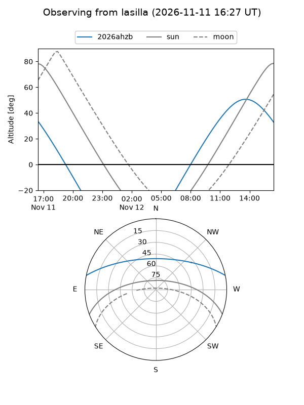
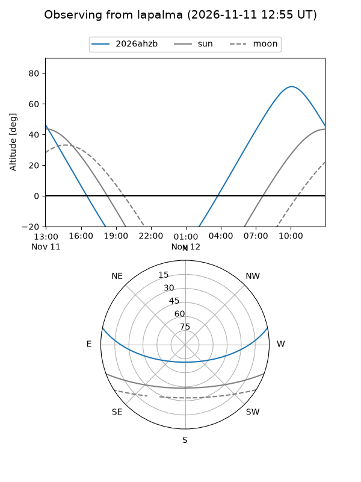
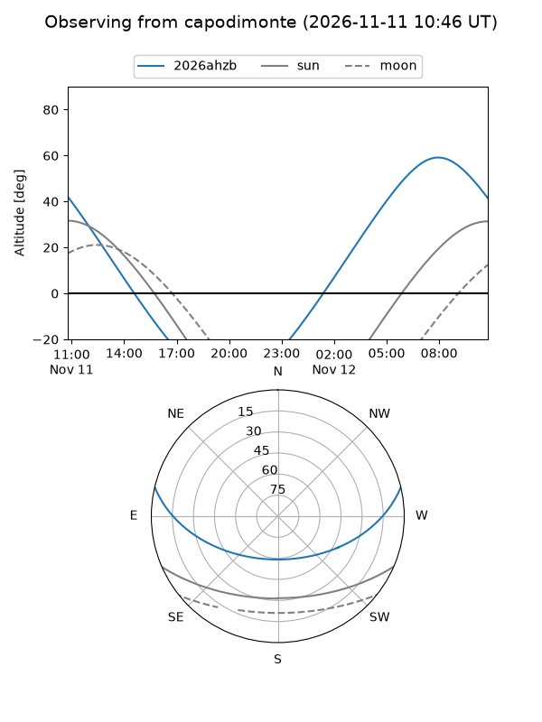
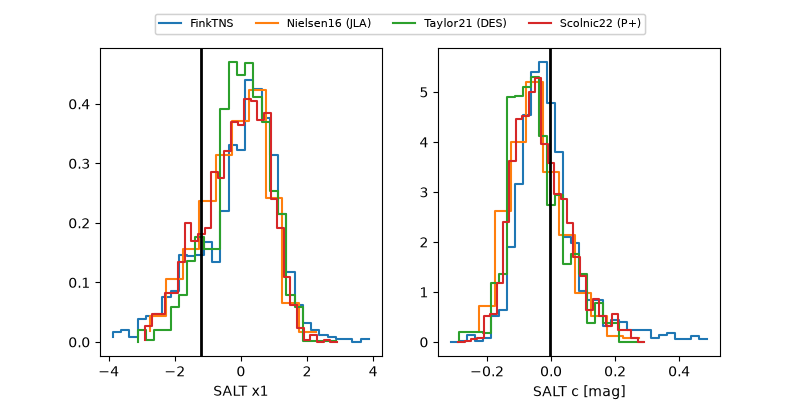

2026ahzb
Target 2026ahzb at 2026-11-11 21:47
Aliases and brokers:
FINK-ZTF: ztf.fink-portal.org/ZTF26acekfbv
Lasair-ZTF: lasair-ztf.lsst.ac.uk/objects/ZTF26acekfbv
ALeRCE-ZTF: alerce.online/object/ZTF26acekfbv
YSE-PZ: ziggy.ucolick.org/yse/transient_detail/2026ahzb
TNS name: wis-tns.org/object/2026ahzb
Direct TNS query: direct search
alt names
ZTF26acekfbv (ztf,fink_ztf)
2026ahzb (tns,yse)
Coordinates:
equatorial (ra, dec) = 184.5769,+10.18094
equatorial (HMS+DMS) = 12:18:18.46,+10:10:51.37
galactic (l, b) = (276.6261,+71.34046)
Flags:
peak dt: +11.3
Photometry:
last ztfr=18.61
5 ztfr detections
Lightcurve
Visibility



Additional plots
